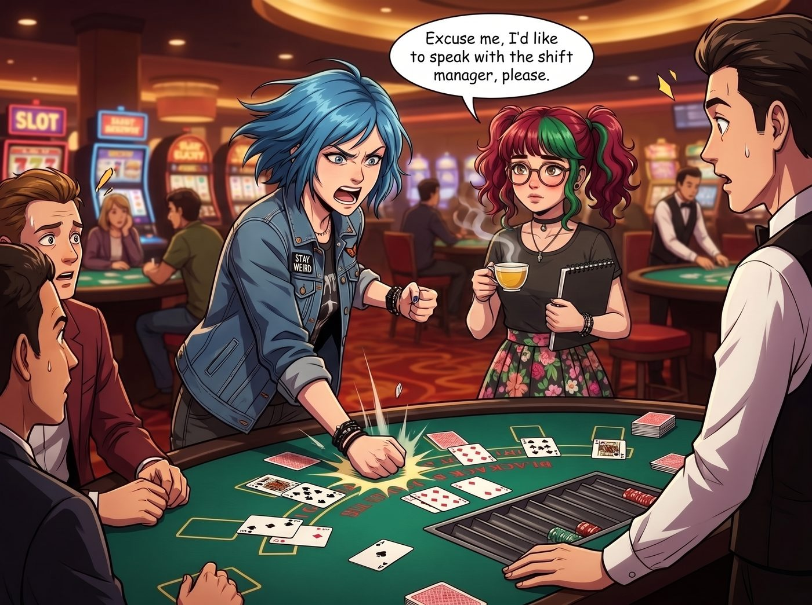
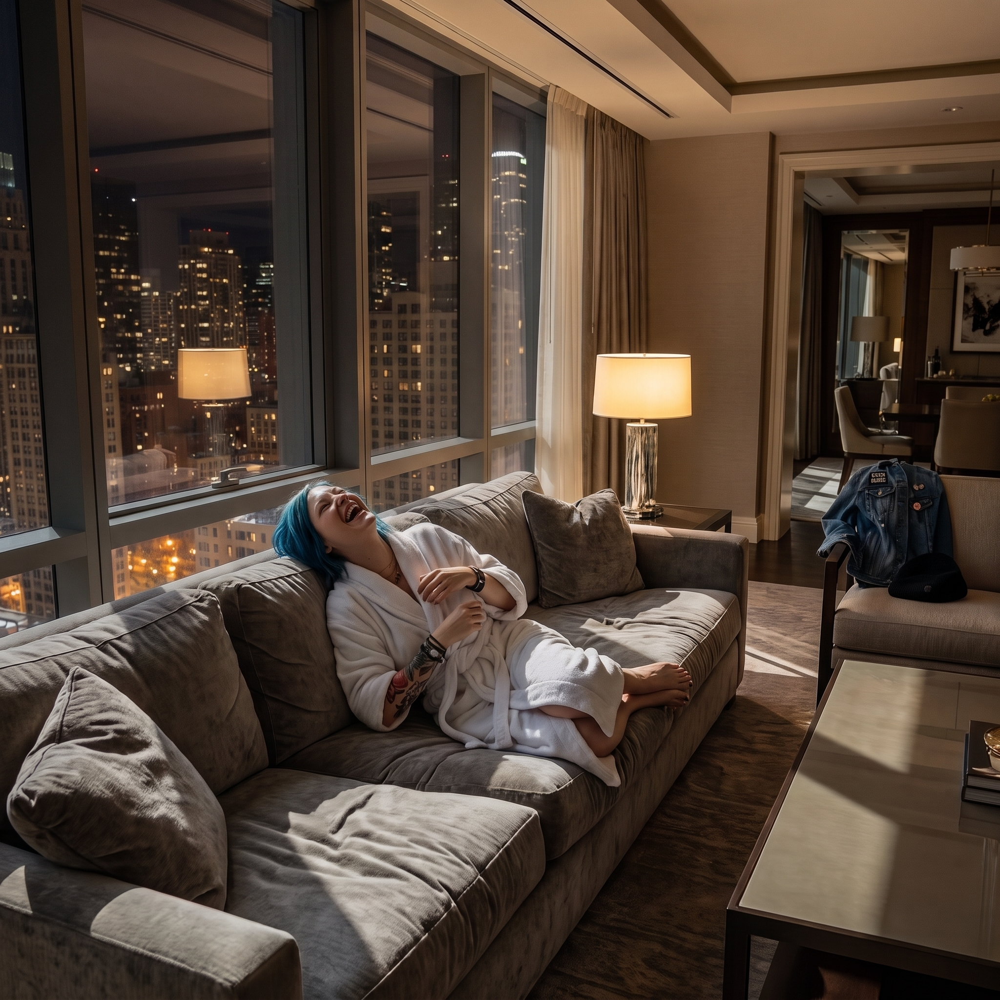

賭城大劫案


當二號車廂的小分隊終於獲得實習生批准，來到這座由霓虹燈、貪婪與無盡籌碼堆砌而成的「罪惡之城」拉斯維加斯進行年度放風時，這場原本應該是糜爛狂歡的旅行，無可避免地演變成了一場降維打擊。
一、Max 與 Chloe 的賭城生存指南
如果放任這兩人去玩，她們的風格會呈現出極端的兩極化。
Chloe 絕對會直奔花旗骰或輪盤這種氣氛最吵鬧、最能大吼大叫的賭桌。她會拿著免費的波本威士忌，把自己當成好萊塢電影裡的老千，然後憑藉她那感人的數學能力和衝動的街頭直覺，在十五分鐘內輸光她辛辛苦苦修了半年車攢下的五百塊美金。
對於社交電池極小的 Max 來說，賭場的噪音、閃爍的燈光和擁擠的人群簡直是地獄。她大概率會躲在最邊緣的一美分老虎機區，一邊喝著免費的柳橙汁，一邊用拍立得拍攝賭客們疲憊且貪婪的神態。
如果 Chloe 輸紅了眼，哭著求 Max 倒轉時間幫她贏一把輪盤，Max 或許會心軟答應一次。但就這一次。在精準押中單一數字贏下一筆錢後，Max 會因為賭場複雜的變數而流下鼻血，然後果斷拉著 Chloe 洗手不幹，宣告超能力在賭城永久封印。
二、Lily 的黑魔法：不戰而屈人之兵
如果指望 Lily 靠算牌去贏錢甚至讓賭場破產，那實在是太低估這名「行政黑魔法」實習生了。算牌既辛苦又充滿數學波動，還要冒著被保安驅逐的風險，這完全不符合 Lily「優雅、合法、高維度」的行事邏輯。
當 Chloe 輸光了籌碼，準備罵罵咧咧地砸桌子時，Lily 登場了。
她不會坐在二十一點的賭桌上算牌，她會端著一杯溫熱的洋甘菊茶，推著圓框眼鏡，帶著那本黑色的筆記本，無比禮貌地要求與賭場的當班經理（Shift Manager）面談。
「經理先生，您好。我是這兩位客人的行政代表。」Lily 的聲音在吵鬧的賭場裡顯得異常溫柔。
經理看著這個穿著碎花洋裝的十九歲女孩，剛想隨便敷衍打發，Lily 已經翻開了筆記本。
「我剛才花了二十分鐘，觀察了貴賭場 B 區的四台輪盤機，並進行了物理層面的轉速與落點數據統計。」Lily 拿出一張畫滿散佈圖的草稿紙，「根據內華達州博彩控制局（NGCB）第 14 章的嚴格規定，賭具的隨機性偏差不得超過 0.001%。但我發現，第 12 號輪盤的轉軸有著微米級的傾斜，導致珠子落入黑色的機率比紅色的機率高出了 0.0035%。這已經構成了『提供未經校準之賭博設備』的合規性違約。」
經理的笑容僵住了。
「另外，」Lily 沒有停下，繼續翻頁，「貴賭場在大廳設置的四十三台 ATM 機，其跨行手續費的字體大小為 8pt。但根據聯邦金融消費者保護局（CFPB）的最新揭露條例，此類收費警語不得小於 10pt。這意味著你們過去一年在這裡收取的所有手續費，都面臨著集體訴訟的退還風險。」
Lily 抬起頭，大眼睛裡閃爍著純潔的光芒：「如果我現在將這份長達 45 頁的合規性觀測報告，同步發送給內華達州博彩委員會、聯邦稅務局以及兩家專打集體訴訟的律師事務所，貴公司可能會面臨為期半年的停業調查。但我們只是一群來度假的普通女孩，我們不想把事情鬧得那麼不愉快。」
三、賭場不會破產，但經理會崩潰
面對這種完全不按套路出牌的行政勒索，賭場高層根本不敢賭那 0.0035% 的機械偏差會不會引來博彩委員會的調查員。
最終的結果是：賭場沒有破產，也沒有任何人被扔出大門。為了封住這個可怕實習生的嘴，賭場經理會滿頭大汗地遞上一份最高級別的和解協議。
當晚，二號車廂的小分隊被幾名保安恭恭敬敬地請進了賭場頂樓一晚價值五萬美金的總統套房。她們獲得了無限量供應的高級自助餐券、太陽馬戲團的 VIP 前排門票，以及 Victoria 極度滿意的私人管家服務。
而在套房的巨大落地窗前，Kate 欣慰地看著大家吃著免費的高級龍蝦，Max 則用相機拍下了 Chloe 穿著浴袍在沙發上打滾的蠢樣。
Lily 依然乖巧地坐在角落裡，喝著不加糖的熱茶，將那份簽好字的保密協議鎖進了保險箱。對她來說，真正的賭神不需要上牌桌，只需要熟讀法規。